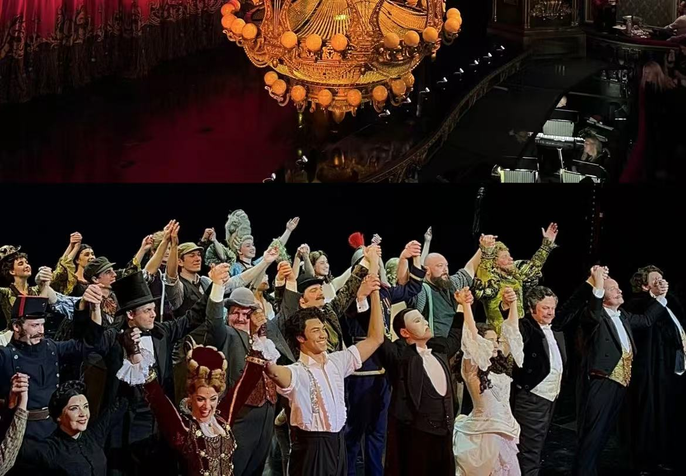

音乐剧是我钟爱的一种艺术形式，它将音乐、舞蹈和戏剧完美融合，创造出独特的视听盛宴。我喜欢音乐剧，因为它能够通过生动的表演和旋律，将故事情感深刻地传达给观众。每一场音乐剧都是一次全新的体验，无论是经典如《歌剧魅影》还是现代作品，都能让我沉浸在故事中，感受角色的喜怒哀乐。音乐剧的现场感特别吸引我，舞台上的灯光、服装和布景，加上演员们的精湛表演，总能让我忘记现实，完全投入到那个梦幻般的世界。此外，音乐剧的音乐旋律往往令人难以忘怀，它们能够触动人心，甚至在观剧后仍久久回荡在耳边。总之，音乐剧以其独特的魅力，丰富了我的精神世界，让我在艺术的海洋中找到了乐趣和启迪。